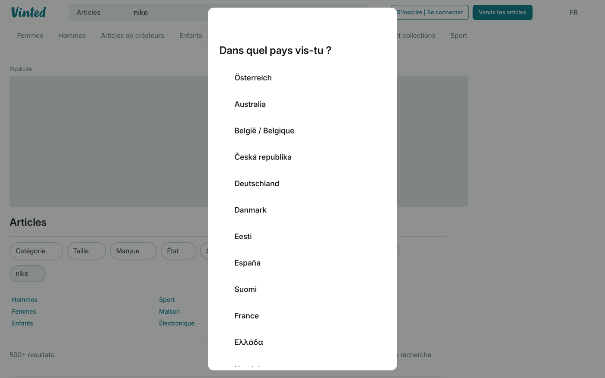

Synthetic monitoring that walks past bot walls — because it's a real browser engine in a real, logged-in session. Not headless Chromium calling from a datacenter.
The check: "search returns listings on a marketplace that hates bots." Same URL, same minute, from the same machine. The only variable is what the monitor is made of.
What every uptime checker and cheap synthetic monitor does — a plain HTTP GET.
$ curl -s -o /dev/null -w "%{http_code}" \
"https://www.vinted.fr/catalog?search_text=nike"
403
$ curl -sI "https://www.vinted.fr/catalog?search_text=nike"
HTTP/2 403
cf-mitigated: challenge
server: cloudflare
The body says "Enable JavaScript and cookies to continue." It will say that forever. A headless Chromium from a cloud region gets the same treatment — datacenter ASN plus automation fingerprint is exactly what these walls are built to catch. Don't take our word for it: point your current monitoring stack at the URL above and see what comes back.
A daemon running the system WebKit — Safari's real engine, real session, driven over a JSON API.
$ curl -s -X POST localhost:8766/navigate -d \
'{"url":"https://www.vinted.fr/catalog?search_text=nike"}'
{ "ok": true, "title": "Un instant…" } # the wall shows up here too…
# …6 seconds later, same session, still a real browser:
$ curl -s -X POST localhost:8766/evaluate -d @assert.js
{ "title": "Articles | Vinted",
"cards": 1358,
"results": "500+ resultats",
"firstItem": "/items/10556258641-leggings-nike-pro" }

Note what actually happened: the wall appeared to navette too. The difference isn't magic IPs — it's that navette is a real browser, so the challenge clears itself and the check proceeds. Your monitor becomes indistinguishable from a user, because engine-wise, it is one.
navette sessions are the OS WebKit — the same engine a human Safari user has. No headless
Chromium, no CDP port, no navigator.webdriver. Bot walls fingerprint browsers for
a living; there's nothing to fingerprint here that isn't already on millions of laptops.
A human logs in once — 2FA and consent screens happen in a real window via
sessions/show. The cookie jar lives in the OS keychain and is reloaded on every
check. Monitor what a logged-in customer sees: their prices, their feed, their
"your listing is live" page. storageState gymnastics not required.
Cookie-seeded navette scouts have run green on free GitHub Actions runners (Azure IPs) — 20/20 packs including bot-walled marketplaces. See starflotte: the fleet evidence is public, in CI logs, re-runnable.
Checkly is a good product. If what you monitor is your own API or your own app, much of this table says use them. This page exists for the other column: the targets that treat every visitor as a suspect.
| Checkly | navette | |
|---|---|---|
| Runs from 22 AWS regions out of the box | yes | bring your own fleet (Mac, VPS, CI runners) |
| SOC 2, SLA, status pages, alert routing | yes | your cron + webhook (for now) |
| Playwright test compatibility | native | deliberately not — plain JSON steps over HTTP |
| Trace/video artifacts per run | yes | screenshots + DOM asserts |
| Passes Cloudflare / DataDome challenges | no — headless Chromium from datacenter ASNs | yes, as shown above |
| Monitors a logged-in, bot-walled session | fragile at best | the core design |
| Human handoff for 2FA / consent inside a check | no | sessions/show, then hide |
| Pilotable by an LLM agent, zero SDK | via MCP / skills layer | it is an HTTP JSON API |
Checkly's execution model (per their docs, 2026-10-27): browser checks "start a real browser instance (Chromium or Chrome)" from their public AWS locations, on a schedule, from 10 minutes down to 10 seconds. That model is excellent for your own app and structurally blind behind bot walls. Both things are true at once.
Everything on this page is two curl commands against a daemon. No SDK, no account, no credit card. Clone this repo and:
# 1. a daemon (macOS: `navette serve --port 8766`; Linux: WebKitGTK image on GHCR, see the navette repo) # 2. the naive monitor — watch it hit the wall $ curl -s -o /dev/null -w "%{http_code}\n" "https://www.vinted.fr/catalog?search_text=nike" # 3. the navette check — watch it pass $ ./check.sh https://www.vinted.fr/catalog?search_text=nike # or by hand: $ curl -s -X POST localhost:8766/navigate \ -d '{"url":"https://www.vinted.fr/catalog?search_text=nike"}' $ curl -s -X POST localhost:8766/read # after a few seconds
check.sh in this repo is the actual script that produced the
evidence on this page. Monitor definitions at navette are plain markdown recipes
(sites/ corpus) — flows and selectors verified
live, versioned in git, executable by a daemon or an agent.